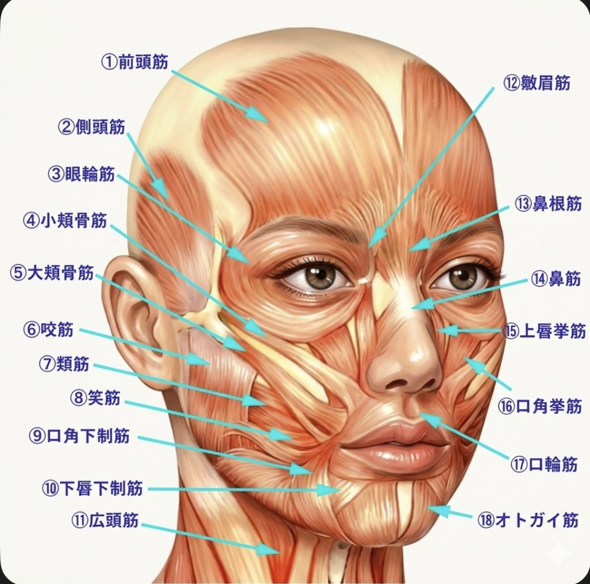
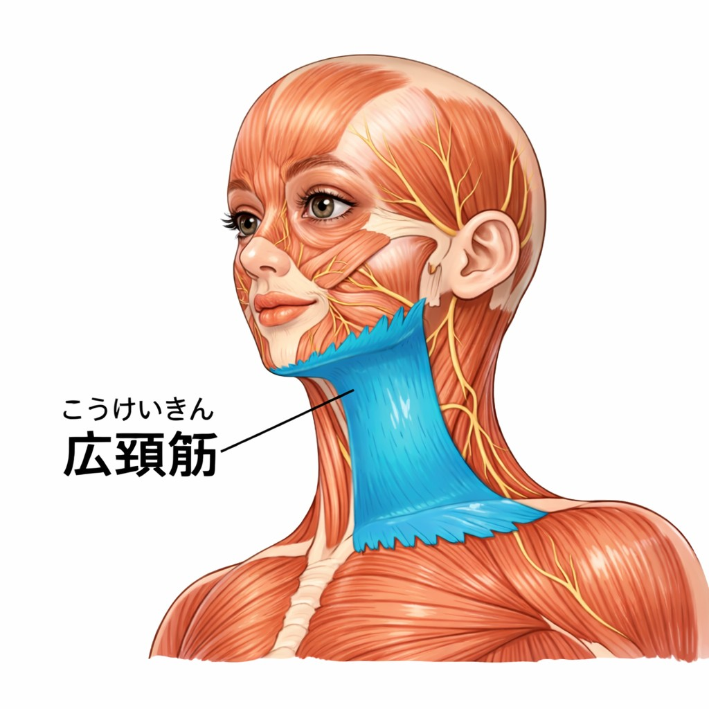
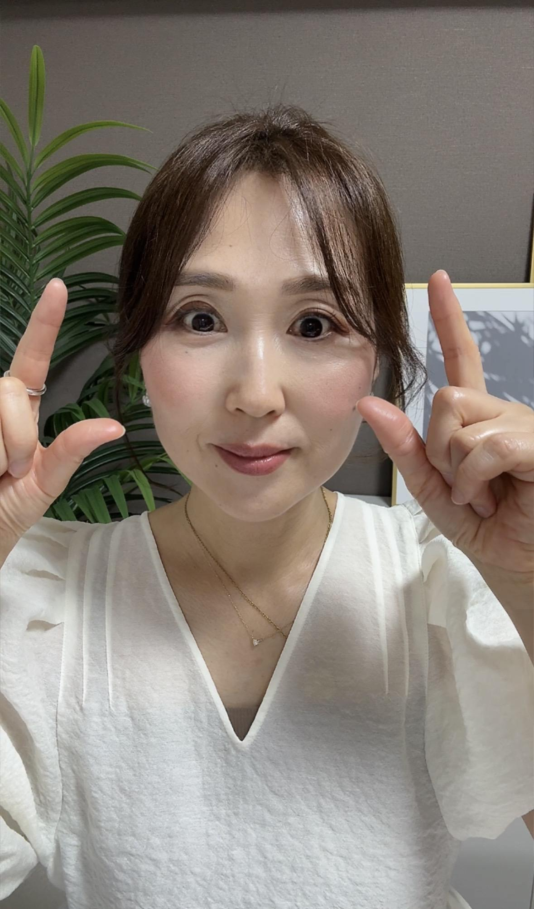

PRACTICE SESSION
実践編
理論を身体で体験しよう。
約20ポーズで、お顔の本来の力を引き出す。
第1章
基本姿勢 — 美の土台となる正しい姿勢


正しい姿勢のポイント
- 頭は糸で上から引き上げられているイメージ
- 顎を軽く引く（引きすぎない）
- 肩の力を抜き、自然に落とす
- 胸を開く / 背骨を縦一直線に保つ
愛されヴィーナス塾
VENUS BEAUTE
講座資料
お顔を変えて、もっと自分らしく輝く。
一生若返るセルフ整形メソッドで
あなたの未来のお顔をつくる
© 2026 Venus BEAUTE All Rights Reserved. 無断転載禁止
理論編 — THEORY
実践編 — PRACTICE
THEORY BOOK
お顔は、人生の鏡。
正しく知ることが、正しい変化への第一歩。

表情筋の特徴
なぜケアが必要なのか
表情筋を正しくゆるめ、整え、鍛えること。
それがヴィーナス美顔ヨガの出発点。

全身でつながるメソッド
正しいアプローチの順番
🌿 ゆるめる
固まった表情筋や首・頭皮の緊張をほどく。ゆるめることが変化の第一歩。
✦ 整える
左右のバランスを整え、歪みをリセット。本来の骨格・筋肉の位置に戻す。
✨ 鍛える
正しい方法で表情筋を目覚めさせ、引き上げる力を育てる。
この3つのバランスが変化を加速させる
ヴィーナス美顔ヨガは本来の美しさを引き出すメソッド
心が下を向くと、顔も下を向く
ヴィーナス美顔ヨガの理念
お顔を上げて、自分らしく輝くことを選ぼう。
変化を手に入れるための大切な約束
継続すること
毎日完璧にやる必要はない。1日5分でも続けることに意味がある。変化はある日突然、気づくようにやってくる。「続けてきた自分」が一番の財産になる。
自己流でやらないこと
約20ポーズには設計された順番がある。間違った方法はシワが深くなることも。ゆるめてから鍛える、という流れが重要。
自分を愛し、褒めること
鏡を見るとき、いいところを探す習慣をつける。小さな変化を認め、自分を大切にする。あなたのお顔は、あなたの歴史。
完璧でなくていい。やめないことが、変化をつくる。
PRACTICE SESSION
理論を身体で体験しよう。
約20ポーズで、お顔の本来の力を引き出す。
正しい姿勢のポイント
顔のたるみ予防は「舌の位置」から


避けるべきNG状態
目的・効果
実施上のポイント
全13エクササイズを
順番どおりに丁寧に行いましょう
肩の高さを比較し、下がっている側をチェック
.jpg)
下がった側の脇を掴み、指先を肩に置いて大きく15回回す
-1.jpg)
-2.jpg)
-3.jpg)
腕を後ろに組み、鼻から4秒吸いながら上げ、吐きながら下ろす（15回）
-1.jpg)
-2.jpg)
胸の前で肘を水平に上げ、肩甲骨を寄せるように後ろへ15回引く
-1.jpg)
-2.jpg)
斜め45度に腕を上げ下ろし（15回）
-1.jpg)
-2.jpg)
下がった側の脇を掴み、肘を大きく15回回す
.jpg)
親指を脇のくぼみ、4指を肩甲骨外側に置き、後ろに15回回す
-1.jpg)
-2.jpg)
熊手にして前鋸筋を掻き出すようにほぐす（10回）
.jpg)
頭の後ろで肘を持ち、鼻から4秒吸って脇を伸ばしながら息を吐く（3回）
-1.jpg)
-2.jpg)
両手重ねて鎖骨下の大胸筋を横に10回、上下に10回ほぐす
.jpg)
鎖骨を3箇所、人差し指と中指で捉えてほぐす（各10秒）
-1.jpg)
-2.jpg)
-3.jpg)
息を4秒吸いながら鎖骨下を固定し、吐きながら頭を後ろに倒す（3回）
-1.jpg)
-2.jpg)
耳角を引っ張り胸鎖乳突筋を出し、耳下の付け根から3ヶ所を横に揺らしてほぐす（各10秒）
-1.jpg)
-2.jpg)
-3.jpg)
目的・効果
実施上のポイント
親指をカギ型にしてあご下へ。5ヶ所（真ん中・口角下制筋・顎の真ん中・エラ・内側翼突筋）を各10秒
-1.jpg)
-2.jpg)
-3.jpg)
-4.jpg)
-5.jpg)
口角下制筋を人差し指カギ型でアゴ先に向かって小さく優しくほぐす（3ヶ所10秒ずつ）
.jpg)
笑筋・頬筋をグーの平らな所で、口角の横から咬筋まで3ヶ所を小さく揺らしてほぐす
-1.jpg)
-2.jpg)
-3.jpg)
上唇尾翼挙筋を鼻側面に中指側面を当てて、人差し指でVを作りながらほぐす（10秒）
.jpg)
頬骨下を人差し指カギ型で4ヶ所、小さく微振動させてほぐす（各10秒）
-1.jpg)
-2.jpg)
-3.jpg)
-4.jpg)
眼輪筋を4指で眼球の骨際に当てて優しくほぐし、眉下の骨に4指を当てて下から持ち上げるようにほぐす
-1.jpg)
-2.jpg)
チョキの指で耳の付け根を捉えて後ろ回し10回、その後上・横・下に引っ張り折りたたんで後ろに10回回す
-1.jpg)
-2.jpg)
側頭筋を斜め上に頭皮を引き上げるようにほぐし、頭頂部の帽状腱膜を両手で挟むようにほぐす
-1.jpg)
-2.jpg)
-3.jpg)
目的・効果
実施上のポイント
正しく行えば、年齢に関係なく
お顔は変わります
基本ポーズ ①
アのポーズ
-1.jpg)
-2.jpg)
基本ポーズ ②
イのポーズ
.jpg)
基本ポーズ ③
ウのポーズ
.jpg)
基本ポーズ ④
エのポーズ
.jpg)
基本ポーズ ⑤
オのポーズ
.jpg)
基本ポーズ ⑥
ヒのポーズ
-1.jpg)
-2.jpg)
基本ポーズ ⑦
目元パッチリポーズ
-1.jpg)
-2.jpg)
-3.jpg)

変化を手に入れるための大切な約束
継続すること
毎日完璧にやる必要はない。1日5分でも続けることに意味がある。変化はある日突然、気づくようにやってくる。「続けてきた自分」が一番の財産になる。
自己流でやらないこと
約20ポーズには設計された順番がある。間違った方法はシワが深くなることも。ゆるめてから鍛える、という流れが重要。
自分を愛し、褒めること
鏡を見るとき、いいところを探す習慣をつける。小さな変化を認め、自分を大切にする。あなたのお顔は、あなたの歴史。
今日の自分をしっかり褒めて認めてあげましょう！
その小さな積み重ねが、
あなたの未来のお顔をつくります
ここまでテキストを読んでくださり、本当にありがとうございます。
ヴィーナス美顔ヨガは、ただお顔を動かすだけのものではありません。
お顔を大切にすることは
自分自身を大切にすること。
忙しい毎日の中でつい後回しになってしまう「自分」。
でも本当は、女性は何歳からでも美しくなれます。
表情が変わると心が変わります。
心が変わると人生が変わります。
鏡を見るたびに少しずつ自分を好きになっていく。
そんな未来を、一緒に育てていきましょう。
あなたが自分を愛し、輝く女性になれること。
それがヴィーナス美顔ヨガの願いです。
6ヶ月後、1年後 今よりもっと素敵な笑顔のあなたに
出会えることを楽しみにしています。
愛されヴィーナス塾
VENUS BEAUTE